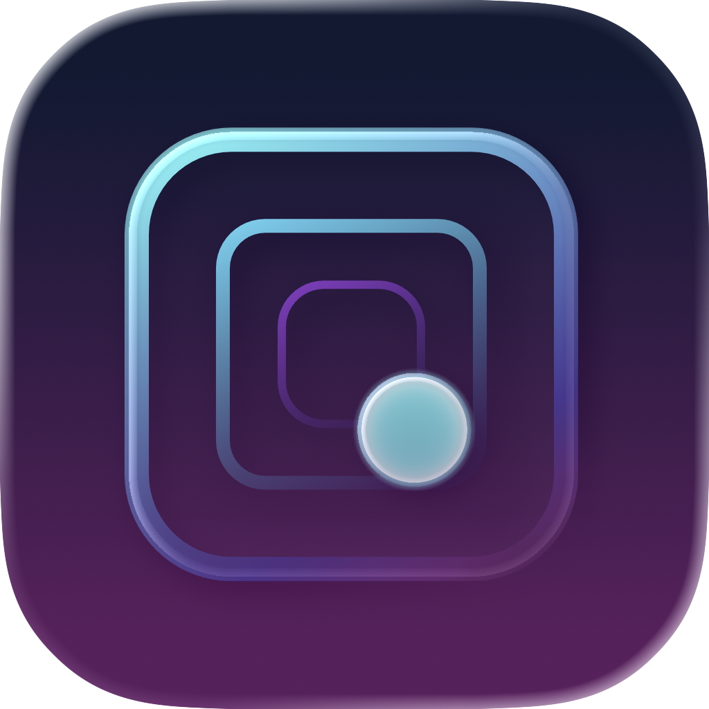

Tunnel Bouncer Support
Need help, found a bug, or want to send feedback? This page contains support information for Tunnel Bouncer.
Support
Tunnel Bouncer is a fast arcade game built around timing, focus, and quick reactions. If something does not work as expected, please contact support.
Contact
Email:
feedback.tunnelbouncer@gmail.com
Frequently Asked Questions
How do rewarded ads work?
Rewarded ads are optional. You can choose to watch an ad to receive a second chance in the game. The app does not force ads during normal gameplay.
Why are leaderboards or achievements not updating?
Tunnel Bouncer uses Apple Game Center for leaderboards and achievements. Please make sure that you are signed in to Game Center in your device settings and that you have an active internet connection.
How can I report a bug?
Send an email with your device model, iOS version, app version, and a short description of what happened. Screenshots or screen recordings are helpful if available.
Privacy Policy
You can read the privacy policy here:
Tunnel Bouncer Privacy Policy
Support
Tunnel Bouncer ist ein schnelles Arcade-Spiel rund um Timing, Konzentration und schnelle Reaktionen. Falls etwas nicht wie erwartet funktioniert, kontaktiere bitte den Support.
Kontakt
E-Mail:
feedback.tunnelbouncer@gmail.com
Häufige Fragen
Wie funktionieren Belohnungsanzeigen?
Belohnungsanzeigen sind freiwillig. Du kannst dich dafür entscheiden, eine Anzeige anzusehen, um im Spiel eine zweite Chance zu erhalten. Die App zwingt dich während des normalen Spielens nicht dazu, Werbung anzusehen.
Warum werden Bestenlisten oder Erfolge nicht aktualisiert?
Tunnel Bouncer verwendet Apple Game Center für Bestenlisten und Erfolge. Bitte stelle sicher, dass du in den Geräteeinstellungen bei Game Center angemeldet bist und eine aktive Internetverbindung hast.
Wie kann ich einen Fehler melden?
Sende bitte eine E-Mail mit deinem Gerätemodell, deiner iOS-Version, der App-Version und einer kurzen Beschreibung, was passiert ist. Screenshots oder Bildschirmaufnahmen helfen, falls verfügbar.
Datenschutzerklärung
Die Datenschutzerklärung findest du hier:
Tunnel Bouncer Datenschutzerklärung
Before publishing, replace feedback.tunnelbouncer@gmail.com with your real support email address. Optional: add your real app icon as app-icon.png in the same folder.